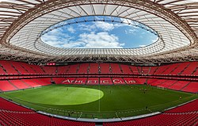

San Mamés es un estadio de fútbol ubicado en Bilbao (Vizcaya, España). Fue inaugurado en su primera fase de construcción el 16 de septiembre de 2013 y es el sucesor del antiguo San Mamés. Es utilizado principalmente por el Athletic Club para la práctica del fútbol, si bien tiene otros usos complementarios en los que se incluye un centro de innovación deportiva y otro de medicina deportiva, una pista de atletismo subterránea y un polideportivo municipal. Además, será utilizado como recinto para conciertos de gran envergadura, al igual que su antecesor. El campo tiene una capacidad de 53 289 localidades (ampliable en 2000 más, según el arquitecto César Azcárate), y cuenta con el rango de estadio de Categoría 4, el máximo otorgado por la UEFA, por lo que puede ser sede de la Eurocopa y albergar finales de la Liga Europa; no así de la Liga de Campeones, ya que ésta requiere un aforo mayor.
La primera piedra se colocó el 26 de mayo de 2010 y las obras comenzaron oficialmente el 25 de junio del mismo año.​ El estadio se realizó en dos fases: en la primera se llevó a cabo la construcción de los dos laterales y uno de los fondos, mientras que en la segunda se construyó el último fondo y se habilitaron los palcos VIP. Se estimó que el estadio estaría totalmente construido en la primavera de 2015, aunque el Athletic Club comenzó a jugar en él a partir de la temporada 2013/14, a falta de la construcción de uno de los fondos. El estadio fue inaugurado en su primera fase de construcción, el lunes 16 de septiembre de 2013, en un partido de Liga frente al R. C. Celta de Vigo, en el que el Athletic Club se impuso al conjunto gallego por 3-2.